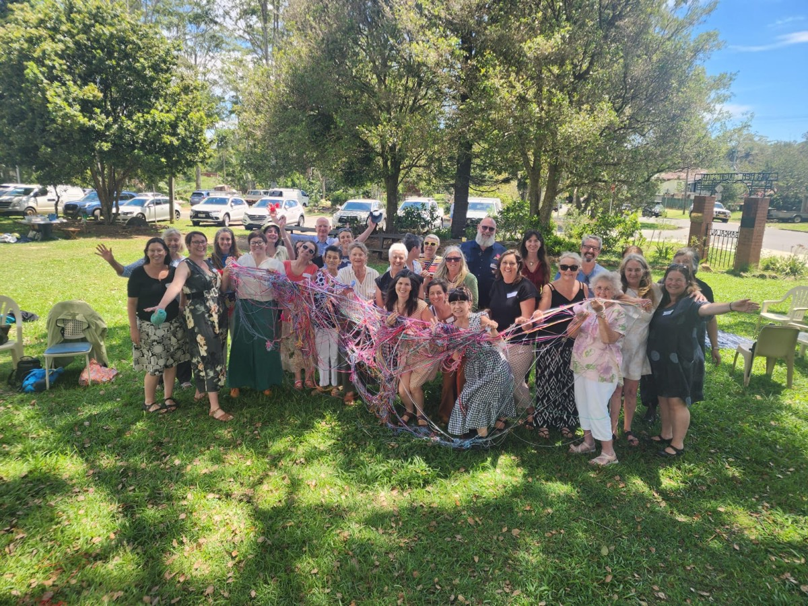

Our progress so far
Our story started in the 2022 floods, when local people led the response in their own communities. Since then, those groups have come together as the Northern Rivers Community Resilience Alliance. Today we are 60+ groups and growing. Between June and October 2026 we have spoken with 58 of those groups to take stock: where we are now, and where we’d like to be.

Many groups, shared purpose
We are a diverse alliance of grassroots community-led groups and organisations: skilled by experience, varied by structure, and united in helping our communities care for themselves and each other before, during and after disasters.
We are disaster tested
Many of our groups have experienced disaster as a team, and local knowledge runs deep.
“[We] learned a lot from the floods and put everything in place afterwards. It proved to be spot on in Alfred. One learning was how well the community came together, even though it's so diverse.”
We value social connection
Connection is at the heart of what we do. Our groups build relationships in their own teams, across their community, with other groups in the alliance, and with emergency services and government agencies, so when disaster hits, people already know who to call.
We’re getting better prepared, together
Taking stock showed us how far we’ve come, and where we want to grow next. Seven aspirations stood out. Each is something our groups told us they want support with, so we can keep looking after our communities and each other for the long haul.
Here is what we heard:
01 Create or update an action plan
Only 13/58 groups say they have an up to date action plan for resilience.
“[We want] to get some direction on how to move forward in developing our preparedness program”
02 Reduce key-people dependency
38 groups noted that leadership/succession planning is a key priority for them.
“Young blood [makes a big difference]. A couple of more really engaged people in the core group.”
03 Maintain engagement between disasters
Community engagement, morale and the drive to stay prepared fade outside of disasters. Groups see this as a big gap.
“People come out during a disaster but not in peacetime. How do we leverage that?”
04 Improve our knowledge of vulnerable residents
About half of our groups told us they need help identifying vulnerable people in their community.
05 Grow our capacity to meet demands
Groups lack time, people and steady money leading to volunteer burn out and good projects stalling before they finish.
“[We need] recurrent baseline funding to cover ongoing costs of running the hall, insurance, internet, radio/repeater maintenance and to hold some events to connect the community.”
06 Improve our backup communication systems
At least 10 groups have specifically called this out as a gap. Without a backup, a community may be unable to communicate and coordinate during a disaster.
“[We have] difficulty engaging more community members with radios.”
07 Manage our volunteer surges
30 groups do not have volunteer policy, procedures, risk documentation or templates.
“[What would make a big difference is] for people to realise that they can't just turn up when a disaster happens. They need training, police checks, induction etc”